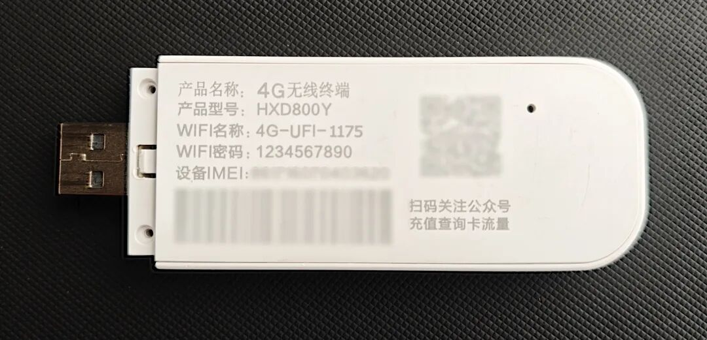
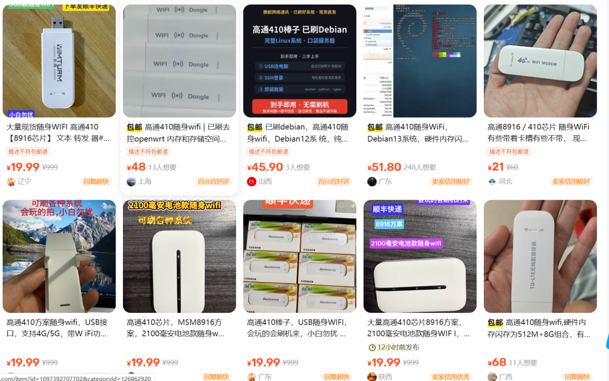
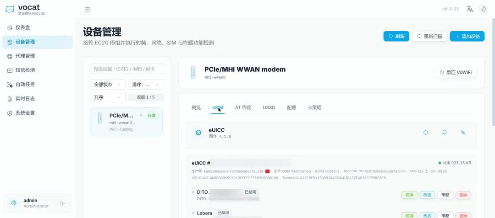
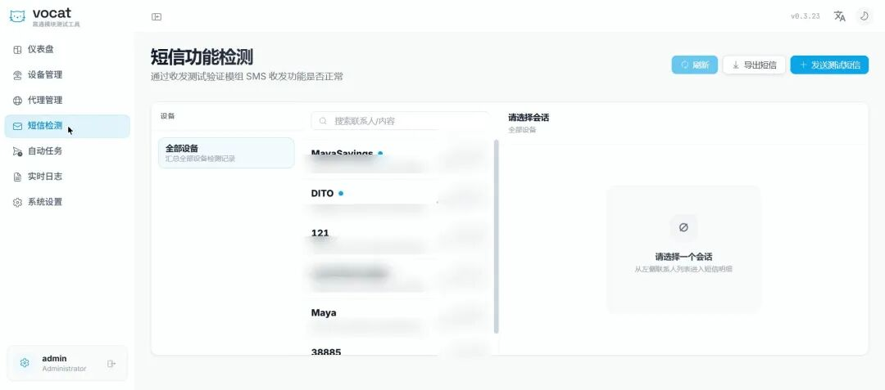
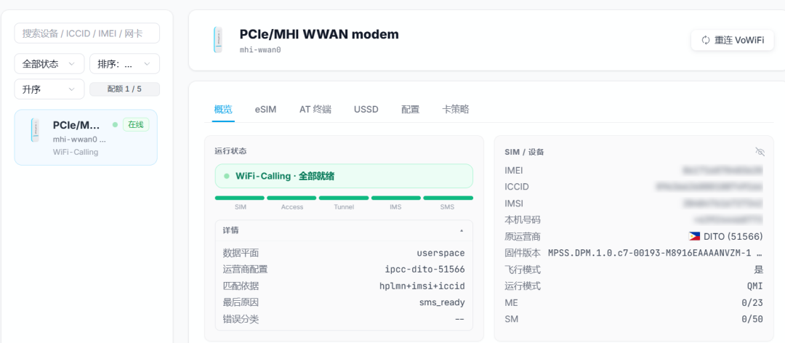
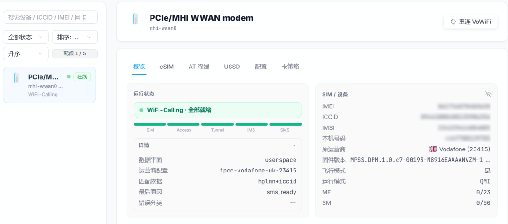
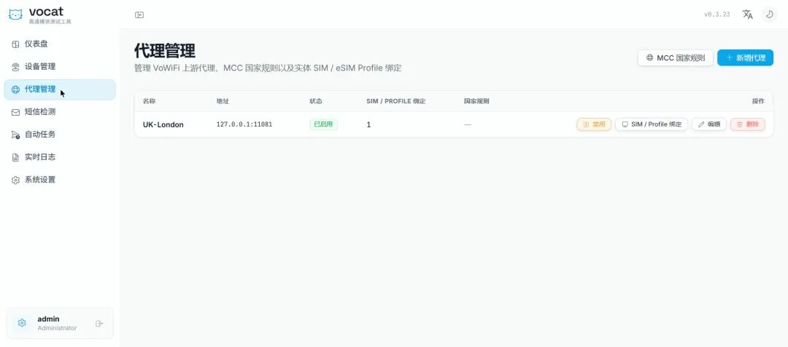
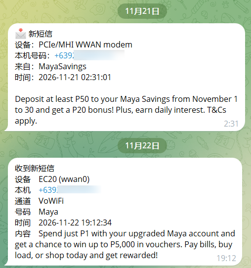
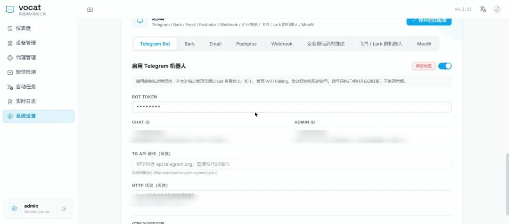

玩 4G 模组棒、随身 WiFi 的人都有这个痛点：模组插在棒子里，收个验证码短信、看眼信号、切张卡，要么敲 AT 命令，要么拔卡插回手机。VoCat 是 GitHub 上的一个开源项目，干的就是把这些事全搬进网页控制台。我正用一根高通 410 的随身 WiFi 棒子跑着它，这篇把项目本身、GitHub 上的近况和我这台的实际用法一起写清楚。
https://github.com/MengMengCode/VoCatPR #40 把模组发现逻辑从厂商白名单改成了识别 QMI 通道，还专门修复了高通 410 棒子的 AT 命令超时问题——SIMCom 等其他高通模组、PCIe/MHI 接口的模组都能被自动发现，我这根 410 棒子就是这么跑起来的。
我用的就是闲鱼上 20 元上下淘的高通 410 随身 WiFi，到手自己刷的系统，商家刷好的成品会稍微贵一些

闲鱼上随处可见的高通 410 棒子，价格非常便宜
7575，首次安装会自动生成管理员密码。一键安装命令如下：
设备管理——设备详情的 eSIM 页：1 张 eUICC 装着多个 Profile，可随时切换（EID 与号码已打码）

短信检测——会话列表（手机号与短信内容已打码）

菲律宾 DITO 卡：WiFi-Calling 全部就绪

英国 Vodafone / VOXI 系卡片：WiFi-Calling 同样秒级就绪

代理管理——UK-London 代理已启用，单独绑定 1 张 SIM 卡
这是我日常用得最多的部分，单独拎出来说。
入口在 「系统设置 → 通知」，可订阅的事件共 6 种：设备上线、设备离线、任务开始、任务完成、任务失败、短信收到。每个渠道都配有「测试通知」按钮，并且支持按设备过滤（只推指定设备）。
系统原生内置了 8 个推送渠道：Telegram、Bark、Email（SMTP）、Pushplus、Webhook、企业微信、飞书 / Lark 群机器人、MeoW。
* 其中 Webhook 支持签名密钥、自定义请求头、文本模板和失败重试（默认超时 5 秒、重试 3 次）；
* 企业微信和飞书支持 JSON 模板，事件、标题、正文、ICCID 等变量都能直接套进去。
Telegram 渠道最特别，它是双向交互的：除了把新短信逐条实时推过来，还能直接通过 Bot 反向控制设备——查状态、切卡、管理 WiFi Calling、发短信、限时拨号都可以。敏感操作会要求管理员二次确认，且只有填在 ADMIN ID 里的那个 Telegram 账号能下达命令，其他人发命令一概不认。对收验证码这个刚需场景来说，短信一到就自动转发到 Telegram，再也不用惦记着登网页控制台去看了。

Telegram 实时收到的菲律宾银行与运营商短信推送
我这台棒子的实际配置只开了 Telegram 一个渠道（Bot 走局域网里的 HTTP 代理出去，因为棒子本身直连 Telegram 不通），其余 7 个都没启用。短信会话里能清楚看到 DITO 和银行的通知短信，配合 Telegram 转发，菲律宾这张卡的验证码基本是实时到达手机。

通知设置——Telegram 渠道配置（ID 与代理地址已打码，BOT TOKEN 为页面自带掩码）
jz02v10 / msm8916，371MB 内存），自带实体 SIM 卡槽。VoCat 直接跑在棒子本机上，就这一台设备，没有外挂其他模组。fw4 防火墙可能会拦截 VoWiFi 隧道的入站连接，README 里有专门的说明和处理办法，安装前建议先看一眼。host 网络 + 特权模式 + 挂载 /dev，这是为了发现模组与支持热插拔，建议只在自己可信的内网主机上这么跑。7575 端口直接映射到公网。VoCat 非常适合手里已经有高通 410 随身 WiFi、想远程收短信、玩 VoWiFi 保号、折腾 eSIM 切卡的玩家：一个单文件二进制加一个清爽网页，把原本散落在 AT 命令、零散脚本和反复拔卡插卡之间的活全收拢了，推送渠道还给得相当足。如果你已经在玩这类棒子，这个面板非常值得装上。
对我来说，它最大的价值就是能在 Telegram 上直接切 eSIM、收短信。场景非常具体：突然有个活动要用外卡接码，结果装着 eSIM 的手机没带在身上，或者插着实体小白卡的备用机没电了——这种时刻，高通 410 随身 WiFi 的优势就彻底体现出来了：只要棒子在线有网，人不管在哪，打开 Telegram 切个号，验证码直接秒推过来，真正实现随时随地切号收短信。
往期实测
01 越南 DataOnline 免费主机实测：1GB 空间 0 元开通，附续期避坑
关注「Today羊毛」，实测不迷路
免费主机 · 手机卡保号 · 网络福利，每篇都是自己上手测过的
觉得有用，点个 赞 和 在看，转给同样玩棒子的朋友
本文为个人实测记录，功能以 VoCat 官方仓库为准；管理面板请勿直接暴露在公网。